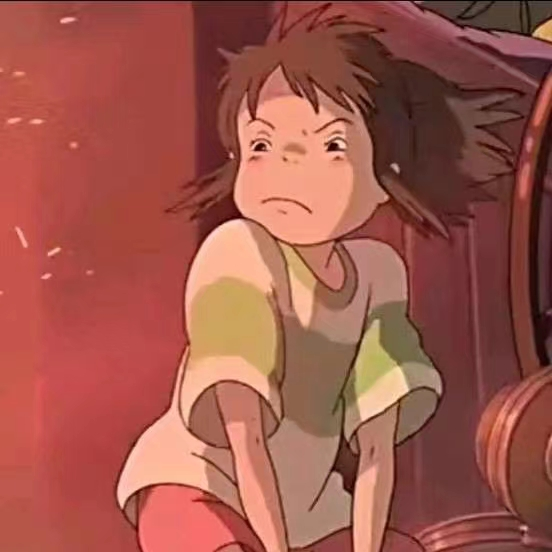

2023.09 - 2027.06
哈尔滨工业大学 · 数字媒体艺术本科
系统学习交互设计、三维建模、虚拟现实、游戏设计、数字影像与视觉传达，并逐步形成“游戏机制 + 空间叙事 + 技术实现”的作品方法。

我的学习路径围绕数字媒体艺术展开：以游戏和虚拟空间为核心，用三维资产、实时引擎、UI 原型和创意技术把概念转化为可体验的作品。
系统学习交互设计、三维建模、虚拟现实、游戏设计、数字影像与视觉传达，并逐步形成“游戏机制 + 空间叙事 + 技术实现”的作品方法。
围绕深圳湾公园周边通勤人群的休憩与情绪放松需求，完成公共艺术座椅概念、模型设计、数字雕塑与空间展示。
负责双世界机制、关卡逻辑、后期处理材质与 UE5 蓝图实现，探讨 AI 时代下人类与人工智能的共生关系。项目获得“最佳人气奖”。
基于 UE5 与 PICO 设备组织沉浸式展陈体验，完成场景交互、视频墙、语音触发和用户体验流程优化。项目获得第八届大学生网络文化节省三等奖。
与澳门科技大学合作，将街区历史文化调研转化为地理探索、线索收集与轻量互动玩法，引导年轻用户理解城市文化。
面向内容创作者设计 AI 智能工作台，负责功能梳理、页面切换程序实现、千问 API 调用尝试与云服务器上线流程。
通过魂类、开放世界、Roguelike、平台跳跃等类型游戏训练关卡动线、数值节奏和叙事体验判断。
使用 UE5 完成场景搭建、蓝图逻辑、后期材质、交互触发和 VR 展示流程。
使用 Processing、p5.js 进行生成艺术和实时交互作品创作。
使用 3ds Max、ZBrush、Substance Painter、Marvelous Designer、Marmoset Toolbag 和 Photoshop 制作视觉资产。
通过设计基础、人居环境导论、设计美学基础、造型艺术基础、设计与调研分析等课程，建立造型、空间、审美和调研分析的基础能力。
学习摄影与镜头语言、影像声音基础、数字剪辑与合成、动画、数字影像作品分析、数字色彩、录音艺术与声音设计、视听表达技法与设计等内容，形成影像叙事和视听表达意识。
课程覆盖数字媒体程序基础、数字媒体设计基础、网站与网络程序设计、交互设计、虚拟现实系统、交互影像制作、网络交互动画、互动装置艺术设计与网络交互产品设计，为网页原型、VR 和交互作品提供技术支撑。
围绕游戏引擎基础、智能游戏设计、算法艺术、生成式计算艺术与跨媒介介设计实践、数据可视化设计、媒体数据分析、智能媒体传播等课程，持续拓展游戏机制、生成艺术和 AI 媒体方向。
通过数字媒体策划与营销、融合媒体设计与传播、广告创意与设计、数字影视广告创作、数字媒体业务实践、联合设计工坊和创意实习，将设计表达与真实传播场景连接起来。